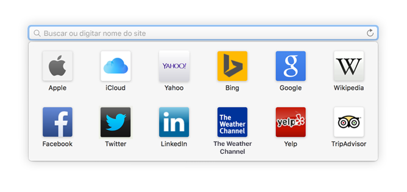
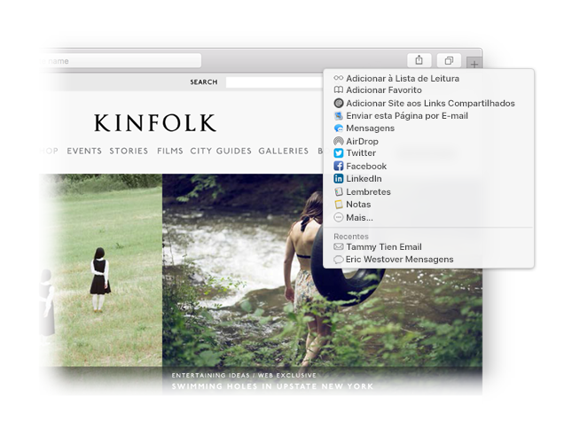

Encontre um favorito.
Clique no campo de Busca Inteligente para acessar seus sites favoritos. Clique em um site para acessá‑lo.

Fixar um site.
Para fixar um site, arraste a aba para a esquerda. Ele ficará na barra de abas.

Compartilhe um link.
Clique em  para enviar um link em um e-mail ou texto, compartilhá-lo no Facebook ou Twitter, ou adicioná-lo às Notas.
para enviar um link em um e-mail ou texto, compartilhá-lo no Facebook ou Twitter, ou adicioná-lo às Notas.